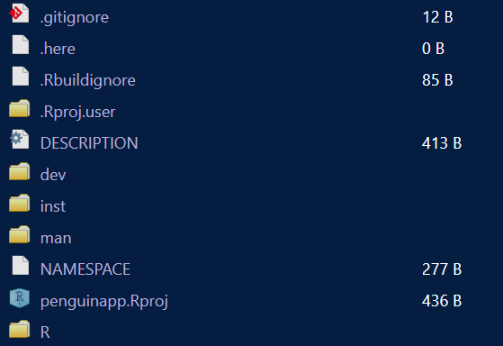

golem::create_golem(path = "C:/Your_R_projects_destination/penguinapp"
)10 Golem: a structured way to build and modularize your app
So far we have only run our app locally in the console. It is time to build an actual Shiny app! There are multiple ways to do this, but we will use the package called golem.
10.1 Learning objectives
The learning objectives for this session are:
- Introduce participants to the golem module
- Build our golem app
- Look over golems step-by-step creation process
NoteReading task: Why golem? ~4 minutes
There are many ways we can make a shiny app. If we want to make a very simple app and just run it locally, we can just put the code from our last exercise in a script, source it, and our shiny app will run. Nice and easy. A more structured way to make a one-script app is by making a new shiny app project. If we have shiny installed we can go to file, new project and select shiny application. This creates a one script app, containing the essentials. Running this app is easy, just click the run app button and you are flying. For many apps, this setup is perfectly adequate and you can deploy it to the internet if you have somewhere to host it.
What then, if our apps are more complex? This is where a package like golem becomes handy. golem is a package focused on building a production-ready, robust shiny app. Once initiated it creates a range of files that step by step helps you establishing a lot of groundwork so you don’t have to do it later. It helps you setup a github repository and it can also help you deploy the app to a number of services once you are done.
One of the most useful features from golem is that it natively helps you modularizing your app. When you modularize you split your app into smaller components. Suggest you have an app with multiple pages, where each page provides a different range of buttons, sliders and plots. How do you keep track of which button goes where? Scripts can easily get out of hand that way. golem makes one script pr. page, containing info for the UI and server that goes together. So if your app contains a welcome page, a settings page, and a plot page, golem will make three files for you - a welcome file, a settings file and a plot file. Additionally it will make a server file and a ui file, where all your modules are tied together.
Is golem overkill for what we are doing here? Certainly! But I want to introduce it to you already so you know it, and once you start developing more complex apps, you know where to go.
10.2 Starting a golem
If we want to make a new app and we have golem installed, we can open the menu and select new project (like we did above) and pick Package for shiny app using golem. If we want to do this from the console.
Lets make an app about something fun - penguins. We will call it “penguin app” (or “penguinapp” in R writing)
Running this command (with a package name of your choice) creates a new R project called penguinapp. We will see this has quite a few more files than our standard Shiny project.

This is actually a functional Shiny app, though at this stage it works a bit differently. We can run it with the command golem::run_dev(). Running this command will take us to a golem welcome page with resources and information. This is very similar to the example in our shiny project above.
To understand what golem really offers, it is beneficial to look at the dev folder. In this folder we will see three documents:
- 01_start.R
- 02_dev.R
- 03_deploy.R
These three files contains a step by step guide to how you build and deploy a shiny app. You don’t have to do it all (or in the order you are asked to), but golem gives a suggested path through the development process, starting right after we create our app.
10.3 💬 Discussion activity: 01_start.R
Time: ~5 minutes.
We don’t have time to go too much into detail this session with what you do in 01_start - but take a few minutes to open the file, and discuss the content with the person next to you. What kind of information does golem suggest you setup? Do you recognize any terms in this file?
golem helps you with a lot of housekeeping you usually end up doing last minutes, including making a DESCRIPTION file (which contains a lot of input about required packages, info on the author, and whether you have coined a specific license to the usage of your package.) It also helps you with a number of other helpful tools for reproducible development such as using git and github. By doing this ahead of time, you do all the legwork before development begins, and you won’t have to do it once your app has grown in size.
At this point we will limit ourselves to making a DESCRIPTION file by running the following:
golem::fill_desc(
pkg_name = "penguinapp", # The name of the golem package containing the app (typically lowercase, no underscore or periods)
pkg_title = "PKG_TITLE", # What the Package Does (One Line, Title Case, No Period)
pkg_description = "PKG_DESC.", # What the package does (one paragraph).
authors = person(
given = "AUTHOR_FIRST", # Your First Name
family = "AUTHOR_LAST", # Your Last Name
email = "AUTHOR@MAIL.COM", # Your email
role = c("aut", "cre") # Your role (here author/creator)
),
repo_url = NULL, # The URL of the GitHub repo (optional),
pkg_version = "0.0.0.9000", # The version of the package containing the app
set_options = TRUE # Set the global golem options
)A DESCRIPTION file is also where you note what packages are required to run your app. This can be done by using the function usethis::use_package(PACKAGE NAME) Normally it is sufficient to call the package on it’s own, with a notable exception being the tidyverse package - here you should add the following: usethis::use_package("tidyverse", type = "suggests") because tidyverse is a collection. Adding used packages to the DESCRIPTION file makes it easier to deploy the app, because it makes it clear what packages need to be installed on your remote server.
10.4 🧑💻 Exercise activity: DESCRIPTION
Time: ~5 minutes.
Fill out the information for the description file and run the code in the penguinapp folder. Add relevant packages we have used (or you expect we will use) using usethis.Think about tidyverse packages - what tools from that collection do we actually use?
10.5 Development and modularization
We will in this workshop be bad examples and start development on our penguin app before doing any of the housekeeping. if we are leading by example, this is a poor example indeed! But jokes aside, our second file 02_dev.R contains the scripts we need to build our app.
There are many different functions in this file and we do not need all of them - a lot of these functions are advanced edge cases in case you want to implement specific programs or programming languages. It does contain some helpful functions:
- usethis::use_github() helps you share your project on github
- usethis::use_data_raw() is helpful if you want to use data in your app
- golem::add_utils(“helpers”, with_test = TRUE) creates a script for making helper functions, in case you develop your own functions to be used in the app
The rest of the functions are beyond the scope of this workshop, except one: golem::add_module()
10.6 💬 Discussion activity: add_module
Time: ~5 minutes.
Open the add_module() function. Discuss with the person next to you what it does, and why this could be useful
10.7 Making our first module
We want to make an app about the penguins dataset. In general, it is considered good design form to consider what the app should look like before we start coding. Lets take a look at the data and see what we can do with it:
dplyr::slice_head(penguins,n = 10)# A tibble: 10 × 8
species island bill_len bill_dep flipper_len body_mass sex year
<fct> <fct> <dbl> <dbl> <int> <int> <fct> <int>
1 Adelie Torgersen 39.1 18.7 181 3750 male 2007
2 Adelie Torgersen 39.5 17.4 186 3800 fema… 2007
3 Adelie Torgersen 40.3 18 195 3250 fema… 2007
4 Adelie Torgersen NA NA NA NA <NA> 2007
5 Adelie Torgersen 36.7 19.3 193 3450 fema… 2007
6 Adelie Torgersen 39.3 20.6 190 3650 male 2007
7 Adelie Torgersen 38.9 17.8 181 3625 fema… 2007
8 Adelie Torgersen 39.2 19.6 195 4675 male 2007
9 Adelie Torgersen 34.1 18.1 193 3475 <NA> 2007
10 Adelie Torgersen 42 20.2 190 4250 <NA> 2007We see we have eight different columns with data about the penguins - species, island, bill length, etc. Lets make a module called “overview” where we will make a an explorative plot in the next chapter. For now, we build the module:
golem::add_module(name = "overview")you will notice the standard golem output includes an argument stating with_test=TRUE. This is not necessary for our app, and truth being told I have yet to grasp the potential and utility in the tests offered by golem. Know they are there, and you can look for information if this is of interest to you.
If we run this command, we should now get a new file - we get a console output stating File created at R/mod_overview.R. Looking in our R folder we see there now is a script called mod_overview.R. The script contains several chunks - lets go through them in turn
mod_overview_ui <- function(id) {
ns <- NS(id)
tagList(
)
}This first chunk is the UI component. In the function called tagList (from shiny) we can add all the UI components we desire - cards, pages, you name it.
Next thing we see is the server:
mod_overview_server <- function(id){
moduleServer(id, function(input, output, session){
ns <- session$ns
})
}In this, we put the server component in. So far, this is very similar to our initial example. The next part is commented out (with #) but is quite interesting:
## To be copied in the UI
# mod_overview_ui("overview_1")
## To be copied in the server
# mod_overview_server("overview_1")golem gives us to two functions we can paste into our UI and server script. These are also found in the /R folder and are called “app_ui” and “app_server”. If we open app_ui we will see the following in the top part:
app_ui <- function(request) {
tagList(
# Leave this function for adding external resources
golem_add_external_resources(),
# Your application UI logic
fluidPage(
golem::golem_welcome_page() # Remove this line to start building your UI
)
)
}Here we see the description of the UI - it describes the golem demo page we saw before, with all the golem resources. Standard is shiny::fluidPage, but if you want to use bslib as we discussed in the previous chapter, it is worth upgrading the page type to a one from this package - the equivalent is bslib::page_fluid(). Using the default shiny::fluidPage can cause some unexpected interactions with bslib elements.
In this case, we like the golem page, but we want to make a page of our own. We will turn it into a page with a navigation bar, and add our new module. We replace fluidPage with bslib::page_navbar(), and wrap the golem_welcome_page() in bslib::nav_panel(), telling shiny that we want it to be displayed as a panel in the navigation bar. We also give a title for the tab.
Then we copy the text from the golem module (mod_overview_ui("overview_1")) into another nav_panel() instance, and gives it a title.
app_ui <- function(request) {
tagList(
# Leave this function for adding external resources
golem_add_external_resources(),
# Your application UI logic
bslib::page_navbar(
bslib::nav_panel(
title = "golem welcome page",
golem::golem_welcome_page()
),
bslib::nav_panel(
title = "Our awesome penguin app",
mod_overview_ui("overview_1")
)
)
)
}Next, we open the app_server script. We see it is currently empty - the welcome page is apparantly all UI and no server. We want to add a server of our own, and copy the server script from our module file (mod_overview_server("overview_1"))
app_server <- function(input, output, session) {
# Your application server logic
mod_overview_server("overview_1")
}if we run golem::run_dev() we will now get an app with two tabs - the golem page and an empty page. We have made a modularized app! additional modules can be added the same way, and the size of scripts kept to a manageable size. Note that the background is purple, which is being hard set by golem - if we delete the golem welcome page it will go away.
10.8 Reading activity: 03_deploy.R
Time: \5 minutes.
In our dev folder we had a final file - 03_deploy.R. This one contains helper functions for when your app is ready to be shared with the world. it helps you build functions from your app into a package (and helps you check if it is good enough to be added to CRAN, where we download our packages from), and it contains a number of options to help prepare your app to be hosted on platforms such as posit connect or other platforms. Deploying is beyond the scope of this workshop, but this file will give you a number of options you can look up and find a solution that works for you. If you want an easy way to share apps, I encourage you to check out posit connect - they have free plans if your app is small, and once your account is connected, it requires few steps to upload and update apps.
10.9 Summary
You have now learned
How to build an app with golem
How the dev files work
How modularization works
Where you can find information about how to share your app with the world